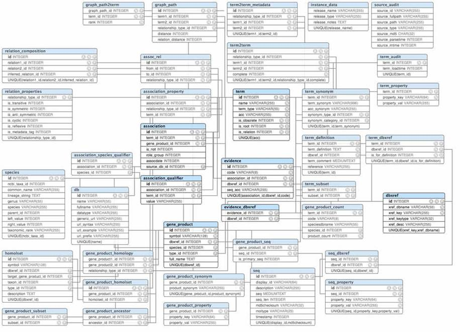

Bio4j
Pablo Pareja
GraphDevRoom 2014
what is Bio4j
in one sentence
Bio4j is a bioinformatics graph-based data platform integrating most data available in the most representative open data sources around protein information available today.
data
- UniProt KB (SwissProt + Trembl)
- Gene Ontology (GO)
- UniRef (50,90,100)
- RefSeq
- NCBI taxonomy
- Expasy Enzyme DB
open!
why Bio4j?
biology & DBs today
Highly interconnected overlapping knowledge spread through different databases

why graphs
In most cases all data is modeled in Relational Databases or sometimes even just as plain CSV files.
why graphs
That might be OK for simple scenarios but as the amount and diversity of data grows, domain models become crazily complicated!
Doesn’t look very compelling right? :) 
why graphs
With a relational paradigm the double implication
Entity <–> Table
does not go both ways
not-so-good implications
- Auxiliary tables
- Artificial IDs
- Dealing with raw tables (in spite of Entity-relationship diagrams)
- Integrating new knowledge becomes difficult
biology != table
Life in general and biology in particular are probably not 100% like a graph…
but one thing’s sure, they are not a set of tables!
why graph databases
- Data stored in a way that semantically represents its own structure
- Incorporating new data is easy –> scalability
why graph databases
- Vertex-centric (local) indices allow for complex traversals –> overcoming supernode problem
cloud
- data as a service
- machine configurations
details about Bio4j
a bit of history
From the beginnings to the BigData platform it is today
how it all started
- Need for massive access to Gene Ontology annotations
- BG7 bacterial genome annotation system
- Need for massive direct access to protein information
more and more data!
- As other data sources were becoming a bottleneck they were being added to Bio4j
- First it was Uniprot KB, then Uniref and we didn’t stop yet :)
numbers
- 109 edges
- 2 × 108 nodes
- 6 × 108 properties
- 150 edge types
- 40 node types
Bio4j structure
Bio4j importing process is modular and customizable allowing you to import just the data you are interested in.
data sources - modules I
- Gene Ontology (GO)
- ExPASy Enzyme DB
- RefSeq
data sources - modules II
- UniRef -> 50, 90, 100
- NCBI taxonomy tree -> GI index
- Uniprot KB -> Swissprot/Trembl, interactions…
data sources - modules III
Just keep in mind that you must be coherent
e.g. you cannot import protein interactions if you didn’t import any protein yet!
Bio4j APIs
- abstract domain model
- Blueprints implementation
- technology-specific versions
domain model
Bio4j database has a well-defined domain model and all nodes and relationships comply with this abstract model
why domain model?
- abstract over Blueprints
- more precise typing
- implementations can use technology-specific features
key advantage
Different graph topologies at the storage level, same domain model.
Example: use type nodes in Titan, labels in Neo4j.
blueprints layer
A default Blueprints implementation of the abstract model.
Apart from the set of interfaces developed as the first layer for the domain model there’s an extra layer that uses Blueprints. This way we’re going one step further for making the domain model independent from the choice of database technology
technology-specific
Optimizations, features, etc.
why Neo4j
- wide adoption
- stable
- Cypher
why Titan
- local! indexes
- on-disk access
- type definitions -> constraints!
Bio4j and the cloud
- Interoperability and data distribution
- Backup and storage
- Scalability
- Applications and service providers on the cloud
- Cost-effective
dev and release process
- coordinate data and code
- Semantic Versioning
- Cloud integration, distribution, deployment, …
how?
- Statika cloud, data + code, modules (see next talk)
- sbt build Java + Scala, automated Bio4j-specific test & release
- git + github versioning, docs, collaboration, coordination
how to use Bio4j?
how we use it
- bg7 genome annotation
- mg7 metagenomics analysis
- comparative genomics, network analysis, genome assembly, …
case study II
Ohio State University
- Integration and analysis of Chip-seq data
- Modeling genomic information and gene regulatory networks
case study III
Berkeley Phylogenomics Group
- Graph database for Big Data challenges in genomics developed on top of Bio4j
community
- @bio4j twitter
- bio4j github org
- bio4j-user google group
- bio4j linkedin
who’s doing Bio4j?
oh no sequences!
Era7 bioinformatics R&D group
- web -> ohnosequences.com
- Github -> ohnosequences
team
- Pablo Pareja
project leader & main dev - Eduardo Pareja-Tobes
technology & architecture - Raquel Tobes
bio data integration
team
- Alexey Alekhin
Statika, release process, dev - Marina Manrique
bio data integration - Evdokim Kovach
dev